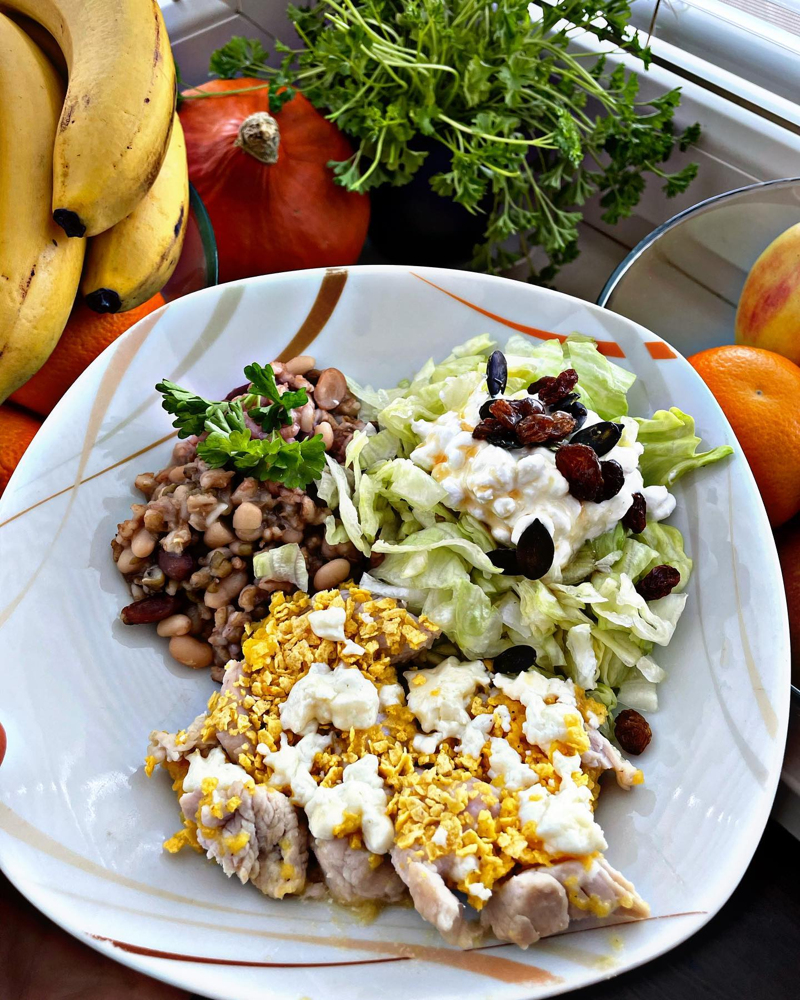

💯✅Strukovinovo- bielkovinová bomba 💯✅Strukovinová zmes s maslom, ľadový šalát s cottage (s horzienkami, tekvicové semiačka, javorový sirup), zapekané morčacie mäso ( oliváč, soľ, balkánsky syr, strúhankové cornflakes- zrýchla opražené na panvici a zapečené v rúre na 1800 stup na 10 min.)
ℹ️✅✅✅ℹ️
Papáme všetko len treba v tom mať jasno 😬.
BEZ ZMENY, NIE JE ZMENA!!
Byť silným a zdravým je jednoduché.
Pošli správu, alebo zavolaj a zostavím ti chutný pestrý jedálniček na mieru bez extrémnych obmedzení a nezmyselných diét!
ℹ️✅✅✅ℹ️
@Zijeme_Zdravo_Lebo_Chceme
#zijemezdravolebochceme #jedlo #fit #lovefood #strong #happiness #healthyfood #lifestyle #krása #nehladuj #zdravechudnutie #pohyb #relax #spanok #energia #sila #imunita #foodblogger #moomyblogger #fitmoms #strukoviny #bielkoviny #bielkovinymusiabyt